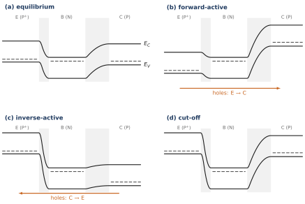
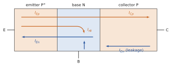
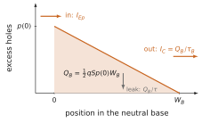
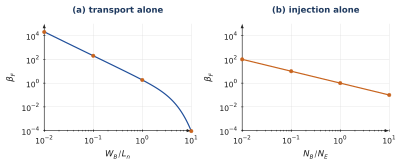
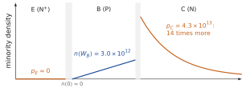
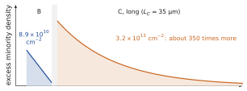
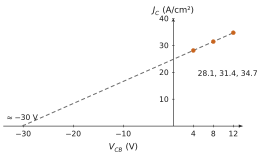
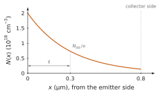

The two junctions sharing a short base; the straight-line electron profile and IC=qSDnn(0)/WB=ISeVBE/VT with IS=qSDnni2/(NBWB); the emitter efficiency γ, the transport factor αT=1−WB2/2Ln2 (expansion of 1/cosh(WB/Ln)), αF=γαT, 1/βF=DnDpNENBdEWB+2Ln2WB2; the stored charge QB=τBIC with τB=WB2/2Dn; the four operating regions and the Ebers–Moll superposition; the voltages VBE and VCB (BC forward when VCB<0), the edge densities n(0)=nB0eVBE/VT, n(WB)=nB0e−VCB/VT; base-width modulation, VA≃WB/δ=QB,maj/Cjc, ro≃VA/IC; the diffusion capacitance CD=τFIC/VT and the transition capacitance Cjc.
Data
Silicon at 300 K, ni=1010cm−3, VT=25.9 mV, ε=1.036×10−12 F/cm. Reference NPN transistor: NE=1018, NB=1016, NC=1015cm−3; dE=0.5 µm; WB=1 µm at VCB=5 V; S=10−4 cm²; Dn=35, Dp=12 cm²/s, τn=0.1 µs; IS=5.6×10−14 A, βF=121, βR=2.9, τB=0.143 ns. Where a problem gives its own diffusivities or lifetimes (those of the textbook), use them.
Problem 8.1The bands of a PNP transistor in its four regionsA · Understanding
Adapted from Neamen, Problems 12.1 and 12.2, pp. 560–561
The course develops the NPN transistor. Consider instead a uniformly doped P+NP transistor (emitter P+, base N, collector P, more lightly doped than the base). Sketch, one below the other and on the same horizontal axis, the band diagram (EC, EV and the Fermi level or the two quasi-Fermi levels) and the field E(x):
at thermal equilibrium;
in forward-active operation (VEB>0, VCB<0);
in inverse-active operation (VEB<0, VCB>0);
in cut-off, both junctions reverse biased.
In each case, say which carriers cross the base and in which direction, and compare with the NPN of the course: what changes, and what does not?
Hint
Start from the equilibrium picture: EF is flat, close to EV in the P regions and close to EC in the N base. Then remember Chapter 6: a forward bias V lowers a barrier by qV, a reverse bias raises it.
Show the short answer
The base bands lie lower than those of the emitter and collector (a well for electrons, a hill for holes); forward-active: low EB barrier, high BC barrier, holes cross the base from emitter to collector; inverse-active: the roles of the junctions are exchanged; cut-off: both barriers high, only leakage currents. The field points from the base towards each outer region at equilibrium.
Show the correction
(a) Equilibrium.EF is flat. In the P+ emitter it lies just above EV, in the P collector a little higher above EV (lighter doping), in the N base near EC. The base bands are therefore lower than those of the emitter and collector: the base is a valley for electrons, a hill for holes (hole energy increases downwards). The step is qVdE at the EB junction and qVdC<qVdE at the BC junction. Each SCR holds positive donors on the base side and negative acceptors on the outer side, so the field points from the base towards the emitter in the EB SCR (E<0 if x runs from emitter to collector) and from the base towards the collector in the BC SCR (E>0). Each field is a triangle; the field is zero in the neutral regions. The EB SCR is narrow and lies mostly in the base; the BC SCR is wide and lies mostly in the collector.
(b) Forward-active. The EB step shrinks to q(VdE−VEB), the BC step grows to q(VdC+∣VCB∣). The quasi-Fermi levels separate in the base: EFp (holes) stays at the emitter level up to the EB junction and drops across the base to reach the collector level. The EB field triangle is smaller, the BC triangle larger and wider. Holes are injected from the emitter into the base, diffuse across it and are swept by the BC field into the collector; a small electron current flows from the base into the emitter.
(c) Inverse-active. The opposite: the BC step is lowered, the EB step raised. Holes are injected by the collector into the base and collected by the emitter. Because the collector is more lightly doped than the base, the BC junction also injects many electrons from the base into the collector: the inverse gain is poor, as for the NPN (βR=2.9).
(d) Cut-off. Both steps are raised, both field triangles grow, the quasi-Fermi levels in the base lie below the equilibrium level (a deficit of minority holes at both edges). Only the small reverse (generation) currents of the two junctions flow.
(e) Everything is mirrored: holes play the role of electrons, the voltages and currents change sign, and the band diagram is the NPN one turned upside down. The physics, injection by a forward-biased junction, diffusion across a short base, collection by the field of a reverse-biased junction, does not change. Note that the field profile of the PNP is the NPN one with the opposite sign.

Electron energies of the PNP transistor in its four regions (generic picture, not to scale); dashed: the Fermi level of each neutral region.
Problem 8.2Gains and the open-base currentA · Understanding
Adapted from Sze & Lee, Ch. 4, Problems 1 and 2, p. 157
An NPN transistor has a transport factor αT=0.998 and an emitter efficiency γ=0.997. When the emitter is left open, the reverse-biased BC junction carries a leakage current ICBO=10 nA (the reverse current of Chapter 6, generation in the BC SCR included).
Compute αF and βF.
In forward-active operation the collector receives the fraction αF of the emitter current plus the leakage: IC=αFIE+ICBO. The base is now left open (IB=0). Show that IE=IC=ICBO/(1−αF) and compute it. Explain physically why the base must be forward biased although no current enters it.
A second transistor has γ=0.999, αT≈1 and ICBO=10 µA (a power device at high temperature). With IB=0, compute IE and the part of it carried by holes injected into the emitter. Compare this hole current with ICBO and explain the coincidence.
Why must the base of a transistor never be left floating in a circuit?
Hint
With IB=0, every hole that leaves the base must be supplied from inside the device. Which holes enter the base, and which ones leave it?
(a) αF=γαT=0.997×0.998=0.9950 and βF=αF/(1−αF)=199.
(b) IB=0 means IE=IC, so IE=αFIE+ICBO and IE=ICBO/(1−αF)=(βF+1)ICBO=10nA/0.005=2.0 µA. The leakage of the BC junction brings holes into the base (the holes generated in the BC SCR and on the collector side are swept towards the base). With the base open, these holes cannot leave through the base contact: they accumulate until the EB junction becomes forward biased enough for the holes to leave by injection into the emitter and by recombination. That forward bias also injects electrons, and the transistor amplifies its own leakage by βF+1.
(c) αF=0.999: IE=10µA/0.001=10 mA. The hole part is (1−γ)IE=10 µA, exactly ICBO. This is not a coincidence: with αT=1 there is no recombination in the base, so the only exit for holes is injection into the emitter, and with IB=0 this exit must carry exactly the hole supply, ICBO.
(d) With an open base the collector current is (βF+1)ICBO; ICBO roughly doubles every 10 K, the current heats the device, which raises ICBO further: a risk of thermal runaway, and a transistor that is not really ‘off’. A resistor from base to emitter gives the holes another exit.
Problem 8.3The saturation current from the base parametersB · Guided calculation
Adapted from Neamen, Problems 12.3 and 12.4, p. 561
The base of a silicon NPN transistor has Dn=18 cm²/s, nB0=4×103cm−3 and a neutral width WB=0.80 µm; the EB area is S=5×10−5 cm².
Compare IC=qSDnn(0)/WB with IC=ISeVBE/VT and compute IS. What is the base doping, with the course value of ni?
Compute IC at VBE=0.58, 0.65 and 0.72 V. By how much must VBE increase to multiply IC by 10?
For each point, compute n(0)/NB. Up to which point is the low-injection model valid?
A second transistor has Dn=22 cm²/s, WB=0.80 µm and nB0=2×104cm−3. What area gives IC=2 mA at VBE=0.60 V? With this area, what VBE gives 5 mA?
Show the short answer
(a) IS=7.2×10−15 A, NB=2.5×1016cm−3; (b) 38.3 µA, 0.572 mA, 8.53 mA; 59.6 mV per decade; (c) 0.09 %, 1.3 %, 19 %; (d) S=1.97×10−4 cm², 0.624 V.
Show the correction
(a) n(0)=nB0eVBE/VT, so IS=qSDnnB0/WB=1.602×10−19×5×10−5×18×4×103/0.8×10−4=7.2×10−15 A. NB=ni2/nB0=2.5×1016cm−3.
(b) e0.58/0.0259=5.3×109: IC=38.3 µA; at 0.65 V, 0.572 mA; at 0.72 V, 8.53 mA. A factor 10 needs VTln10=59.6 mV.
(c) n(0)=nB0eVBE/VT=2.1×1013, 3.2×1014 and 4.7×1015cm−3: 0.09 %, 1.3 % and 19 % of NB. The last point violates n(0)≪NB: at about 10 mA the transistor enters high injection, and the ideal law overestimates IC.
(d) S=ICWB/[qDnnB0eVBE/VT]=2×10−3×0.8×10−4/(1.602×10−19×22×2×104×1.16×1010)=1.97×10−4 cm². Then VBE=0.60+VTln(5/2)=0.624 V. (The area changes only IS; the 60 mV per decade law does not depend on the geometry.)
Problem 8.4The current components of a PNP transistorB · Guided calculation
Adapted from Sze & Lee, Ch. 4, Problems 3, 4 and 5, pp. 157–158
A silicon PNP transistor has NE=5×1018, NB=2×1017 and NC=1016cm−3, a metallurgical base width of 1.0 µm and an area S=0.2 mm². The EB junction is forward biased at VEB=0.5 V and the BC junction reverse biased at 5 V. The minority-carrier diffusivities given by the textbook are 52, 40 and 115 cm²/s in the emitter, base and collector, and the lifetimes 10−8, 10−7 and 10−6 s. The emitter and the collector are thick: treat them as long regions.
Compute VdE, VdC, the widths of the two SCRs and the part of each in the base. Deduce the neutral base width WB.
Compute pB0, nE0, nC0 and the hole density p(0) at the emitter edge of the neutral base.
Compute the three diffusion lengths. Is the base short? Sketch the minority-carrier profiles in the three regions.
Compute the current components: IEp (holes injected into the base), IrB (holes recombining in the base, with QB/τ), ICp=IEp−IrB, IEn (electrons injected into the emitter) and ICn (electrons extracted from the collector by the reverse-biased BC junction).
Deduce IE, IC, IB, then γ, αT, αF and βF.
Which loss limits the gain? Propose two changes of design that would improve it.

The current components of a PNP transistor in forward-active operation. After Sze & Lee, Ch. 4, Fig. 5, p. 128.Hint
For a PNP, p(0)=pB0eVEB/VT. In a long emitter, the injected electron current is qSDEnE0(eVEB/VT−1)/LE (Chapter 6). ICn is the reverse current of a long N…P side: qSDCnC0/LC.
(a) VdE=0.0259ln(5×1018×2×1017/1020)=0.954 V and VdC=0.0259ln(2×1033/1020)=0.793 V. EB SCR, under VdE−0.5=0.454 V: WE=0.0553 µm, of which the fraction NE/(NE+NB)=0.96, i.e. 0.053 µm, lies in the base. BC SCR, under 0.793+5=5.79 V: WC=0.887 µm, of which NC/(NB+NC)=1/21, 0.042 µm, lies in the base. WB=1−0.053−0.042=0.905 µm.
(b) pB0=ni2/NB=500, nE0=20, nC0=104cm−3. e0.5/0.0259=2.42×108, so p(0)=1.21×1011cm−3, far below NB: low injection.
(c) LE=52×10−8=7.2 µm, LB=40×10−7=20 µm, LC=115×10−6=107 µm. WB/LB=0.045: the base is short and its hole profile is a straight line from p(0) to almost zero at the BC edge. In the emitter, the electron excess decays exponentially over LE from nE0eVEB/VT=4.8×109cm−3; in the collector, the electron density is pulled below nC0 near the BC SCR and recovers over LC.
(d) IEp=qSDBp(0)/WB=1.602×10−19×2×10−3×40×1.21×1011/9.05×10−5=17.15 µA. QB=21qSp(0)WB=1.75×10−15 C, so IrB=QB/τB=1.75×10−15/10−7=17.5 nA and ICp=17.13 µA. IEn=qSDEnE0(eVEB/VT−1)/LE=1.602×10−19×2×10−3×52×20×2.42×108/7.2×10−4=0.112 µA. ICn=qSDCnC0/LC=3.4×10−14 A, a pure leakage, negligible here. (The exact sinh solution of the base gives IEp=17.16 and ICp=17.15 µA: the straight line is accurate to 0.1 %.)
(e) IE=IEp+IEn=17.26 µA, IC=ICp+ICn=17.13 µA, IB=IE−IC=0.129 µA. γ=IEp/IE=0.9935; αT=ICp/IEp=0.99898, which is indeed 1−WB2/2LB2; αF=γαT=0.9925 and βF=132.
(f) The emitter loss 1−γ=6.5×10−3 is six times the base loss 1−αT=1.0×10−3. To raise γ: increase NE/NB, by doping the emitter more or the base less (the latter also lowers the Early voltage and raises the base resistance), or narrow the base, since IEp∝1/WB. Thinning the emitter below LE would do the opposite: the electron profile in the emitter would end at the contact and its gradient, hence IEn, would increase. To raise αT: a narrower base. (The textbook diffusivities are larger than the course values for holes in a base doped at 2×1017cm−3; the method does not depend on them.)
Problem 8.5The base as a charge reservoirB · Guided calculation
Adapted from Sze & Lee, Ch. 4, Problems 8 and 9, p. 158
Use the PNP transistor of Problem 8.4 in forward-active operation.
With the straight-line hole profile, show that the stored excess charge is QB=21qSp(0)WB, the area of a triangle. Compute it.
Show that IC≃2DBQB/WB2, check it numerically, and deduce the transit time τB=QB/IC.
Show that the recombination current is IrB=QB/τ and that αT=1−τB/τ. Give a picture of the base that makes these two results obvious.
The collector current is to be switched off in a time much shorter than τB. What base current must flow briefly, and why can it not be obtained by simply opening the base?
(a) ∫0WBp(0)(1−x/WB)dx=p(0)WB/2, so QB=21qSp(0)WB=1.75×10−15 C.
(b) IC≃qSDBp(0)/WB and p(0)=2QB/(qSWB) give IC=2DBQB/WB2=2×40×1.75×10−15/(9.05×10−5)2=17.1 µA, the value of Problem 8.4. τB=QB/IC=WB2/2DB=1.02×10−10 s. The base behaves as a reservoir that empties through the collector in τB.
(c) Each excess hole recombines at the rate 1/τ, so the reservoir loses QB/τ per second by recombination, which the base contact must replace: IrB=QB/τ=17.5 nA. The fraction lost is IrB/IEp≃(QB/τ)/(QB/τB)=τB/τ, so αT=1−τB/τ=1−1.0×10−3. Picture: a bucket filled at the emitter, emptied at the collector in the time τB, leaking slowly through recombination with time constant τ. The leak is small because the bucket is emptied a thousand times faster than it leaks.
(d) The stored charge must be removed: a reverse base current IB≈−QB/toff pulls the holes out through the base contact (for an NPN, electrons out). With an open base, the charge can only leave through the collector (time τB, while n(0) is still maintained) and by recombination (time τ): the turn-off is slow, the same physics as the storage time of Chapter 7.

The base as a reservoir: filled at the emitter, emptied at the collector in τB, leaking slowly by recombination.
Problem 8.6Which loss limits the gain?A · Understanding
Adapted from Neamen, Problem 12.27, p. 564
The two losses of the course are the transport loss in the base and the injection loss into the emitter.
Compute the transport factor αT=1/cosh(WB/Ln) for WB/Ln=0.01, 0.1, 1 and 10, and compare with 1−WB2/2Ln2. Taking γ=1, deduce βF in each case.
Take a transistor with DE=DB and dE=WB (short regions), so that γ=1/(1+NB/NE). Compute γ for NB/NE=0.01, 0.1, 1 and 10 and, taking αT=1, βF.
What do you conclude: which ratio controls each loss, and how large must it be for a useful gain of about 100?
(a) WB/Ln=0.01: αT=0.99995 (approximation identical), βF=2.0×104. 0.1: αT=0.9950 (approximation 0.995), βF=200. 1: αT=0.648, while the approximation gives 0.5, no longer valid; βF=1.84. 10: αT=9.1×10−5 (the approximation is meaningless): βF≈9×10−5, two separate diodes, no transistor action (Chapter 8, ‘How short must the base be?’).
(b) γ=0.990, 0.909, 0.5 and 0.091; βF=γ/(1−γ)=NE/NB: 100, 10, 1 and 0.1.
(c) With αT alone, βF≃2Ln2/WB2; with γ alone, βF≃(DB/DE)(NE/NB)(dE/WB). A gain of 100 requires WB<Ln/7 and an emitter about 100 times more doped than the base. The base transport is easy to make excellent (Ln is tens of microns, WB about 1 µm); the injection ratio is limited because the emitter cannot be doped much above 1019cm−3. This is why, in modern transistors, the emitter efficiency limits the gain, as for the reference transistor of the course.

The gain allowed by each loss alone. Transport is easy to make excellent; injection is limited by the emitter doping.
Problem 8.7Designing for a current gain of 150B · Guided calculation
Adapted from Neamen, Problem 12.29, p. 565
A silicon NPN transistor is to have βF=150. The data are DB=23 and DE=8 cm²/s, the lifetimes τB=2×10−7 s in the base and τE=8×10−8 s in the emitter, NB=2×1016cm−3 and an emitter width dE=0.35 µm. The technology cannot make a neutral base narrower than 0.80 µm. The course model neglects recombination in the EB SCR; here it is not negligible, and it is described by a third factor δ=0.9975, so that αF=γαTδ.
Compute LB and LE. Are the base and the emitter short?
Which base width should be chosen, and why? Compute αT.
Compute the required αF, then the required γ, and the minimum emitter doping NE.
Check your design by recomputing βF with NE rounded to 5×1018cm−3. Which of the three losses is now the largest?
(a) LB=23×2×10−7=21.4 µm and LE=8×8×10−8=8.0 µm. WB/LB=0.037 and dE/LE=0.044: both regions are short, and the straight-line formulas of the course apply.
(b) The narrowest base, 0.80 µm, gives the best transport and the best injection ratio (the injected electron current is inversely proportional to WB): αT=1/cosh(0.8/21.4)=0.99930.
(c) αF=βF/(βF+1)=150/151=0.99338. Then γ=αF/(αTδ)=0.99338/(0.99930×0.9975)=0.99656, so
DBDENENBdEWB=γ1−1=3.45×10−3,
so that
NE=238×2×1016×0.350.80/3.45×10−3=4.6×1018cm−3.
(d) With NE=5×1018: γ=0.99683, αF=0.99365 and βF=156, slightly above specification. The losses are 1−γ=3.2×10−3, 1−δ=2.5×10−3 and 1−αT=0.7×10−3: the emitter injection is still the largest, but recombination in the EB SCR is close, and it would dominate at low current, where it is relatively larger.
Problem 8.8The transistor used backwardsB · Guided calculation
Adapted from Neamen, Problem 12.19, p. 563
A silicon NPN transistor has NE=1019, NB=1017, NC=7×1015cm−3 and a metallurgical base width of 1.2 µm. It operates in the inverse-active region with VBE=−2 V and VCB=−0.565 V (BC junction forward biased).
Sketch the minority-carrier densities through the device.
Compute the minority-carrier densities at the two edges of the neutral base, at the edge of the neutral collector and at the edge of the neutral emitter.
Compute the two SCR widths, the part of each in the base and the neutral base width.
Compare the electron density injected into the base by the BC junction with the hole density injected into the collector. Use this to explain why βR is small, and why it cannot be improved without spoiling the forward operation.
Show the short answer
(b) n(WB)=3.0×1012, n(0)≈0, pC=4.3×1013, pE≈0cm−3; (c) EB 0.196 µm (0.195 in the base), BC 0.199 µm (0.013 in the base), WB=0.99 µm; (d) ratio 14.
Show the correction
(a) In inverse-active operation the BC junction injects, the EB junction collects. The electron profile in the base is a straight line from n(WB) at the collector side down to zero at the emitter side; holes are injected into the collector, decaying from the BC edge; at the reverse-biased EB junction the hole density of the emitter is pulled to zero.
(b) nB0=1020/1017=103, pC0=1.43×104, pE0=10cm−3. With e0.565/0.0259=2.98×109: n(WB)=3.0×1012cm−3 and pC=4.3×1013cm−3 at the collector edge. At the EB side e−2/0.0259≈3×10−34: n(0) and pE are practically zero.
(c) VdE=0.954 V; under 0.954+2=2.95 V, WE=0.196 µm, almost all in the base (fraction NE/(NE+NB)=0.99): 0.195 µm. VdC=0.766 V; under 0.766+VCB=0.766−0.565=0.201 V, WC=0.199 µm, of which NC/(NB+NC)=0.065, 0.013 µm, in the base. WB=1.2−0.195−0.013=0.99 µm. Note that here the reverse-biased EB SCR eats most of the base.
(d) The injected densities are in the ratio pC0/nB0=NB/NC=14: the BC junction injects into the collector 14 times more holes (per unit density) than electrons into the base, the inverse of the situation at the EB junction. The ‘inverse emitter efficiency’ is poor, and βR is of order 1. Improving it would need a heavily doped collector, which would narrow the BC SCR, increase Cμ, reduce the breakdown voltage and the Early voltage: the asymmetry is the price of good forward operation.

Inverse-active operation (generic picture, linear axis): the BC junction injects many more holes into the collector than electrons into the base.
Problem 8.9Charges stored in saturationB · Guided calculation
Adapted from Neamen, Problem 12.18, p. 563
A silicon NPN transistor has NE=1018, NB=5×1016 and NC=1015cm−3, Dn=25 cm²/s in the base, a neutral base width WB=0.70 µm much shorter than Ln, and a long collector with hole diffusion length LC=35 µm. It operates in saturation with an electron current density Jn=125 A/cm² across the base and VBE=0.72 V. (With the course value of ni, the textbook value VBE=0.70 V could not carry this current at all, even with VCB=0: check it.)
In saturation both junctions inject. Write the straight-line profile between n(0) and n(WB) and show that Jn=WBqDnnB0(eVBE/VT−e−VCB/VT). Compute VCB.
Compute VCE.
Compute the number of excess electrons per cm² in the base, and compare with forward-active operation at the same VBE.
Compute the hole density injected at the edge of the neutral collector and the number of excess holes per cm² stored in the long collector. Is low injection valid there?
Compare (c) and (d). What does this imply for the time needed to switch the transistor off?
Show the short answer
(a) VCB=−0.654 V; (b) VCE=66 mV; (c) 8.9×1010 cm−2 (8.3×1010 forward-active); (d) 9.1×1015cm−3, 3.2×1013 cm−2, no; (e) about 350 times more charge in the collector.
Show the correction
Check first: qDnnB0/WB=1.602×10−19×25×2000/0.7×10−4=1.14×10−10 A/cm², and at 0.70 V the maximum, VCB=0, is 1.14×10−10×e27.0=62.5 A/cm² <125. At 0.72 V the forward-active current is 135 A/cm².
(a) n(0)=nB0eVBE/VT, n(WB)=nB0e−VCB/VT, and the current is qDn times the slope [n(0)−n(WB)]/WB. e−VCB/VT=1.183×1012−125/1.144×10−10=9.1×1010, so VCB=−0.654 V: the BC junction is forward biased.
(b) VCE=VCB+VBE=−0.654+0.72=66 mV.
(c) n(0)=2.37×1015 and n(WB)=1.8×1014cm−3; the trapezoid holds 21[n(0)+n(WB)]WB=8.9×1010 electrons per cm², against 8.3×1010 in forward-active operation (triangle). The base charge hardly changes.
(d) pC0=105cm−3, pC=pC0e−VCB/VT=9.1×1015cm−3. In a long region the excess is pCe−x/LC, which holds pCLC=3.2×1013 holes per cm². But pC is nine times NC: the collector is in high injection, and the ideal model is only an order-of-magnitude estimate.
(e) The lightly doped collector stores about 350 times more charge than the base. To switch the transistor off this charge must be removed first, by recombination (τp of the collector, microseconds) or by a reverse base current: the storage time of Chapter 7 again. This is why fast logic avoids deep saturation (Schottky-clamped transistors).

Saturation (generic picture, not to scale): the base charge barely changes, but the collector stores far more.
Problem 8.10Early voltage: from data and from the physicsB · Guided calculation
Adapted from Neamen, Problems 12.35 and 12.37, p. 566
A transistor carries IC=1.2 mA at VCE=2 V, and its Early voltage (the extrapolated intercept of the output line) is VA=120 V. Compute ro and go=1/ro with ro=VA/IC, and the collector current at VCE=4 V. Repeat for IC=0.25 mA and VA=160 V.
A silicon NPN transistor has NE=2×1018, NB=2×1016, NC=2×1015cm−3, a metallurgical base width of 0.85 µm and Dn=25 cm²/s. VBE=0.650 V. Compute the part of the EB SCR in the base, then, for VCB=4, 8 and 12 V, the part of the BC SCR in the base, WB and JC=qDnn(0)/WB.
Estimate the Early voltage from the points at 4 and 12 V (extend the line to JC=0).
Compute VA,loc=QB,maj/Cjc at VCB=8 V and compare. Explain the difference with the relation VA,loc=VA+VCE of the course.
(a) ro=120/1.2×10−3=100 kΩ, go=10 µS. In the linear model IC∝VA+VCE: IC(4V)=1.2×122−1×124=1.22 mA. For the second transistor, ro=640 kΩ, go=1.56 µS and IC(4V)=0.253 mA. (Strictly ro=(VA+VCE)/IC, 1.7 % larger here; VA/IC assumes VCE≪VA.)
(b) VdE=0.871 V; under 0.871−0.650=0.221 V the EB SCR is 0.120 µm wide, 0.119 µm in the base. VdC=0.692 V. At 4, 8 and 12 V the BC SCR is 1.83, 2.49 and 3.00 µm wide, of which NC/(NB+NC)=1/11 lies in the base: 0.166, 0.226 and 0.273 µm. WB=0.565, 0.505 and 0.458 µm. With nB0=1020/2×1016=5×103 and n(0)=5×103e0.65/0.0259=3.9×1014cm−3, JC=28.1, 31.4 and 34.7 A/cm².
(c) Slope (34.7−28.1)/8=0.82 A/cm²/V; the line reaches JC=0 at VCB=4−28.1/0.82=−30 V, i.e. VCE≈−30+0.65: VA≈30 V.
(d) At 8 V: QB,maj/S=qNBWB=1.62×10−7 C/cm² and Cjc/S=ε/WBC=4.17×10−9 F/cm², so VA,loc=38.8 V. The local value is measured from the operating point, the intercept from VCE=0: VA,loc=VA+VCE=30+8.65≈39 V, consistent. The curve is not straight (the SCR widens more slowly at higher voltage), so the intercept depends on the two points chosen. A lightly doped base (2×1016) and a thin one make this Early voltage small.

The collector current rises as the neutral base narrows; the line through the points meets JC=0 near −30 V.
Problem 8.11Base width and speedB · Guided calculation
Adapted from Sze & Lee, Ch. 4, Problems 23 and 24, p. 159
The emitter and collector delays are neglected, so that τF≃τB=WB2/2D.
A silicon PNP transistor has Dp=10 cm²/s in the base and WB=0.5 µm. Compute τB, the diffusion capacitance CD=τFIC/VT at 1 mA, and the frequency 1/(2πτB), the transit-time limit of the transistor (the analog course calls it the upper bound of fT).
What base width gives a transit-time limit of 5 GHz with the same Dp?
The transistor of (b) has junction capacitances Cje+Cjc=2 pF. Compute CD at 1 mA and 10 mA. Above what current does the diffusion capacitance dominate?
Compare the charge stored at 1 mA with that of a long base, where the carriers leave only by recombination with τ=1 µs. Why would an NPN transistor of the same base width be faster?
Show the short answer
(a) 0.125 ns, 4.8 pF, 1.27 GHz; (b) 0.25 µm; (c) 1.23 pF and 12.3 pF, above 1.6 mA; (d) 32 fC against 1 nC, about 30 000 times less.
(b) WB=2D/(2πf)=20/(2π×5×109)=2.5×10−5 cm =0.25 µm.
(c) τF=31.8 ps: CD=31.8ps×IC/25.9mV=1.23 pF at 1 mA and 12.3 pF at 10 mA. CD=2 pF at IC=2×10−12×0.0259/31.8×10−12=1.6 mA: below, the junction capacitances dominate; above, the stored charge of the base.
(d) Q=τBIC=32 fC against τIC=1 nC for a long base: the two exits of the course; the collector drains the carriers 3×104 times faster than recombination would. Electrons diffuse faster than holes (Dn≈3Dp in silicon): for the same width τB is three times shorter. This is one reason why fast bipolar circuits use NPN transistors.
Problem 8.12EquilibriumB · Guided calculation
From the course notes, Chapter 8
(i) Compute VdE, VdC, nB0, pE0 and pC0. (ii) Compute the widths of the two SCRs at equilibrium and the part of each in the base. (iii) Check (8.4), nB0=NEe−VdE/VT=NCe−VdC/VT.
Show the short answer
(i) VdE=0.835 V, VdC=0.656 V, nB0=104, pE0=102, pC0=105cm−3. (ii) EB: W=0.330 µm, 0.327 µm in the base; BC: W=0.966 µm, 0.088 µm in the base. (iii) 1018e−32.2=104 and 1015e−25.3=104cm−3.
Problem 8.13InjectionB · Guided calculation
From the course notes, Chapter 8
(i) At VBE=0.65 V, compute n(0) and IC. (ii) What VBE gives IC=10 mA, and what is then n(0)/NB? (iii) Up to what collector current is low injection (n(0)<NB/10) satisfied?
Show the short answer
(i) n(0)=104e0.65/0.0259=7.9×1014cm−3; IC=4.4 mA. (ii) VBE=VTln(IC/IS)=0.671 V; n(0)=1.8×1015cm−3, 18 % of NB: beyond low injection. (iii) n(0)=1015cm−3 at IC=IS×1011=5.6 mA.
Problem 8.14Gain and designB · Guided calculation
From the course notes, Chapter 8
(i) Compute γ, αT, αF and βF. (ii) Recompute βF with NE=1019cm−3 (keep Dp). (iii) Recompute it with WB=0.5 µm. Which design constraint does each change use?
Show the short answer
(i) γ=0.9932, αT=0.99857, αF=0.9918, βF=121. (ii) The emitter term drops to 6.9×10−4: βF=473 (heavily doped emitter; real emitters at 1019 are degenerate and the gain is somewhat lower). (iii) Both terms decrease, to 3.4×10−3 and 3.6×10−4: βF=264 (short base).
Problem 8.15Ebers–Moll parametersB · Guided calculation
From the course notes, Chapter 8
Neglect recombination in the base. (i) Compute IES, ICS, αF, αR and βR. (ii) Check the reciprocity relation. (iii) Why is αR so much smaller than αF? (iv) Where does IC cross zero at VBE=0.611 V?
Show the short answer
(i) IpE0=3.8×10−16 A, IpC0=1.9×10−14 A; IES=IS+IpE0=5.645×10−14 A, ICS=IS+IpC0=7.53×10−14 A; αF=0.9932, αR=0.745, βR=2.92. (ii) αFIES=αRICS=5.607×10−14 A =IS. (iii) The collector is lightly doped: when the BC junction is forward biased it injects many holes into the collector (pC0=105), which do not reach the emitter. (iv) At VCB=−VBE+VTln(1/αR)=−0.611+0.0076=−0.603 V.
Problem 8.16SaturationB · Guided calculation
From the course notes, Chapter 8
The transistor carries IB=0.1 mA and IC=1 mA. Using (8.18)–(8.19) with βF=121 and βR=2.9 (neglect the −1 terms), compute VBE, VCB and VCE. Draw the electron line across the base.
Show the short answer
With x=eVBE/VT, y=e−VCB/VT: IS(x−1.345y)=1 mA and IS(x/121+y/2.9)=0.1 mA give VBE=0.619 V, VCB=−0.576 V, VCE=43 mV. The line goes from n(0)=2.4×1014 to n(WB)=4.6×1013cm−3: both ends raised, smaller slope.
Problem 8.17Early effectB · Guided calculation
From the course notes, Chapter 8
(i) Compute WB at VCB=2 V and 10 V, knowing that it is 1.0 µm at 5 V and that the base side of the BC SCR is NC/(NB+NC) of its width. (ii) By what factor does IC change between these voltages, at fixed VBE? (iii) Compute the advance δ of the SCR edge per volt at 2 V and the Early voltage VA=WB/δ; check with qSNBWB/Cjc.
Show the short answer
(i) WBC=1.94 µm at 2 V and 3.89 µm at 10 V, base parts 0.177 and 0.354 µm, against 0.258 µm at 5 V: WB=1.081 µm and 0.904 µm. (ii) IC∝1/WB: a factor 1.196. (iii) dWBC/dV=WBC/2(VdC+VCB)=0.366 µm/V, δ=33.3 nm/V, VA=32.5 V; Cjc=0.533 pF, qSNBWB=17.3 pC, the same 32.5 V.
Problem 8.18CapacitancesB · Guided calculation
From the course notes, Chapter 8
At IC=2 mA and VCB=5 V, compute the diffusion capacitance CD of the EB junction (with τF≈τB) and the transition capacitance Cjc of the BC junction. What would CD be with a typical τF=0.5 ns? How much charge would a long base (τn=0.1 µs) store at the same current?
Show the short answer
CD=0.143ns×2mA/25.9mV=11.0 pF; Cjc=0.365 pF; with τF=0.5 ns, CD=39 pF. Short base: Q=τBIC=0.29 pC; long base: τnIC=200 pC, 700 times more.
Problem 8.19A faster transistorB · Guided calculation
From the course notes, Chapter 8
The base width is halved, everything else unchanged. How do τB, the diffusion capacitance at a given current, βF, the Early voltage and the sheet resistance of the base change? Comment on the trade-offs.
Show the short answer
τB and CD are divided by 4 (36 ps); βF rises to 264 (Problem 8.16); VA is roughly halved, since qSNBWB is halved while Cjc hardly changes (a shorter base, a larger relative modulation); the sheet resistance 1/(qμpNBWB) doubles to about 27 kΩ per square. Speed and gain are bought with output resistance and base resistance.
Challenge: a new situation
These problems apply the method of the chapter to a device, a material or a situation that the chapter did not treat. The reasoning does not change: state the physical picture, choose the model, compute, check.
Problem 8.20An implanted base with a built-in fieldC · Synthesis
Adapted from Sze & Lee, Ch. 4, Problems 16 and 17, p. 158
In a real NPN transistor the base is made by implantation, and its doping decreases from the emitter to the collector: N(x)=NA0e−x/ℓ with NA0=2×1018cm−3 and ℓ=0.3 µm, over a neutral base of width WB=0.8 µm (x=0 at the emitter side).
Compute the number of acceptors per cm² in the neutral base, QG=∫0WBNdx (the ‘Gummel number’), and the average doping.
In equilibrium, and approximately under low injection, the hole current in the base is zero. Use the drift–diffusion expression of the hole current (Chapters 1 and 4) to show that there is a built-in field E=qkTN1dxdN. Compute it, give its direction and show that it pushes electrons towards the collector.
Write the electron current Jn=qμnnE+qDndn/dx with this field and show that it can be written Jn=NqDndxd(nN). Integrate across the base (with nN=ni2eVBE/VT at x=0 and n≈0 at WB) to obtain
∣Jn∣=QGqDnni2eVBE/VT.
Check that it reduces to the course formula for a uniform base.
The textbook gives, at 300 K, μn=88+1252/(1+0.698×10−17N) cm²/(V·s). Compute Dn for the average doping. The emitter is long, with LE=1 µm, NE=1019cm−3, DE=1 cm²/s, and the base lifetime is 10−6 s. Estimate γ, αT (uniform-base formula, a slight underestimate) and βF.

The implanted base doping.Hint
(c) μnE=DnN1dxdN by Einstein’s relation, so Jn=qDn(dxdn+NndxdN).
Show the short answer
(a) QG=5.6×1013 cm−2, average 7.0×1017cm−3; (b) 863 V/cm, pointing towards the emitter; (d) μn=301 cm²/(V·s), Dn=7.8 cm²/s, γ=0.9929, αT=0.99959, βF≈132.
Show the correction
(a) QG=NA0ℓ(1−e−WB/ℓ)=2×1018×0.3×10−4×(1−e−2.67)=5.6×1013 cm−2, and the average doping is QG/WB=7.0×1017cm−3.
(b) Jp=qpμpE−qDpdp/dx=0 with p≃N gives E=μpDpN1dxdN=qkTN1dxdN (Einstein’s relation). For the exponential profile dN/dx=−N/ℓ, so E=−kT/(qℓ)=−0.0259/0.3×10−4=−863 V/cm, uniform across the base. It points towards −x, the emitter: it holds the holes back against their diffusion towards the lightly doped side. Electrons feel the force −qE, towards +x: the field pushes them towards the collector, an aiding field.
(c) With Einstein’s relation μn=Dn/VT and the field of (b), qμnnE=qDnNndxdN, so Jn=qDn(dxdn+NndxdN)=NqDndxd(nN). In steady state without recombination Jn is constant: Jn∫0WBNdx=qDn[nN]0WB=−qDnn(0)N(0), and n(0)N(0)=ni2eVBE/VT (the law of the junction). Hence ∣Jn∣=qDnni2eVBE/VT/QG. For a uniform base QG=NBWB and IS=qSDnni2/(NBWB), the course formula: the collector current depends only on the total base charge, not on its distribution.
(d) μn=88+1252/(1+0.698×10−17×7.0×1017)=301 cm²/(V·s) and Dn=0.0259×301=7.8 cm²/s. The injection loss is the ratio of hole to electron currents: Dnni2/QGDEni2/(NELE)=7.8×1019×10−41×5.6×1013=7.2×10−3, so γ=0.9929. Ln=7.8×10−6=27.9 µm and αT=1−WB2/2Ln2=0.99959. Then 1/βF≃7.2×10−3+0.4×10−3 and βF≈132. The built-in field shortens the transit (electrons drift as well as diffuse), so the true αT is even closer to 1; the emitter limits the gain.
Problem 8.21A silicon–germanium baseC · Synthesis
Adapted from Sze & Lee, Ch. 4, Problem 25, p. 159
In a SiGe heterojunction transistor, the base contains 10 % germanium, which reduces its bandgap by 9.8 % compared with silicon; the emitter and the collector are pure silicon. Assume that the base current is due only to the holes injected into the emitter, and that the effective densities of states are unchanged.
How does ni2 depend on Eg (Chapter 3)? By what factor is ni2 of the base larger than that of silicon at 300 K?
Using the formula IS=qSDnniB2/(NBWB), with niB the intrinsic density of the base, show that βF is multiplied by exp(ΔEg/kT) compared with an all-silicon transistor of the same doping and geometry.
Compute the ratio of the current gains at 0 °C and at 100 °C. Does the gain increase or decrease with temperature?
Why is this an advantage for the designer? What can be done with the base doping, and which other property of the transistor improves?
Show the short answer
(a) ni2∝exp(−Eg/kT); ΔEg=0.110 eV, factor 69; (c) β(0°C)/β(100°C)=3.5, the gain decreases.
Show the correction
(a) ni2=NcNve−Eg/kT, so a smaller gap gives niB2/ni2=exp(ΔEg/kT). ΔEg=0.098×1.12=0.110 eV and exp(0.110/0.0259)=69.
(b) The electron current injected into the base is proportional to niB2/NB, the hole current injected into the emitter to ni2/NE (silicon emitter). Their ratio, βF, is multiplied by niB2/ni2=exp(ΔEg/kT).
(c) β(0°C)/β(100°C)=exp[kΔEg(2731−3731)]=exp(1274×9.81×10−4)=3.5. The gain decreases with temperature, because the advantage exp(ΔEg/kT) shrinks as kT grows. (In an all-silicon transistor the same temperature dependence is much weaker; the temperature dependence of D and of the gap itself are ignored here.)
(d) A gain of 69 times the silicon value is more than needed: the designer spends it on a much more heavily doped base. That lowers the base resistance (the lateral resistance of the thin base layer), raises the Early voltage (QB,maj larger) and allows a thinner base without punch-through, hence a shorter τB and a higher fT. This is how SiGe transistors reach several hundred gigahertz.